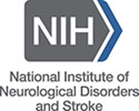

Collaborations & Funding
Work we do together
Our work depends on partners across medicine, engineering and statistics, at BU and around the world.
Consortium
VITAL ARC
Visionary Integration of Technology, AI, and Learning in Critical Illness
VITAL ARC is a Boston University Affinity Research Collaborative, supported by the Evans Center for Interdisciplinary Biomedical Research, that brings together clinicians, engineers and data scientists to build sensor-enabled, AI-powered tools for real-time decision support in critical illness and injury, including trauma, cerebrovascular disease and acute brain injury. Members span cardiology, neurology, surgery, pulmonology, anesthesiology, data science and biomedical engineering.
Partners
Institutions we work with
- Boston University
- Washington University in St. Louis
- NYU Langone Health
- University of Oxford
- University of Crete
Funding
Supported by
We are grateful to the organizations that have supported our research.
Current
- BU Evans Center for Interdisciplinary Biomedical Research
- BU Hariri Institute for Computing
- BU Alzheimer's Disease Research Center
- Boston Medical Center
- Jack Spivack Neuroscience Award, BU Chobanian & Avedisian School of Medicine
- Gertler Foundation
- Neuroptics
- brain4care
Past

National Institute of Neurological Disorders and Stroke- American Heart Association
- Doris Duke Charitable Foundation
- NCATS and BU Clinical and Translational Science Institute
- American Brain Foundation
- Reddy Foundation
- MIT-Philips